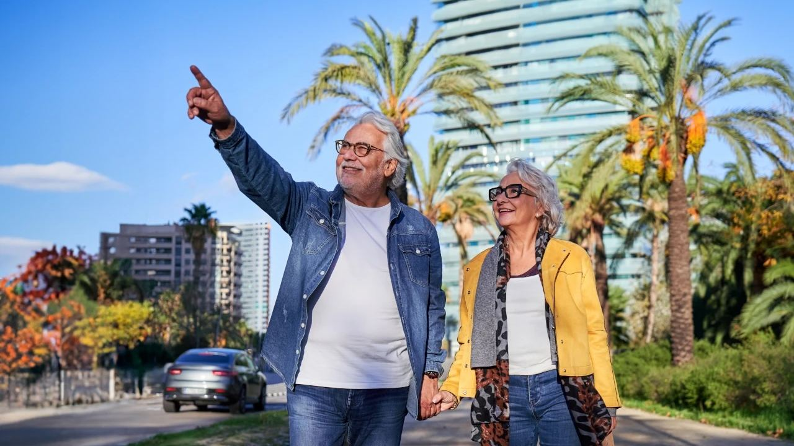
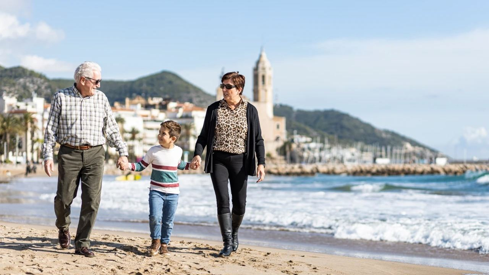
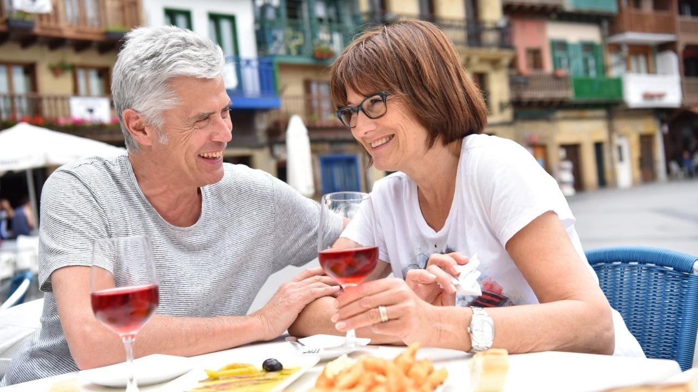
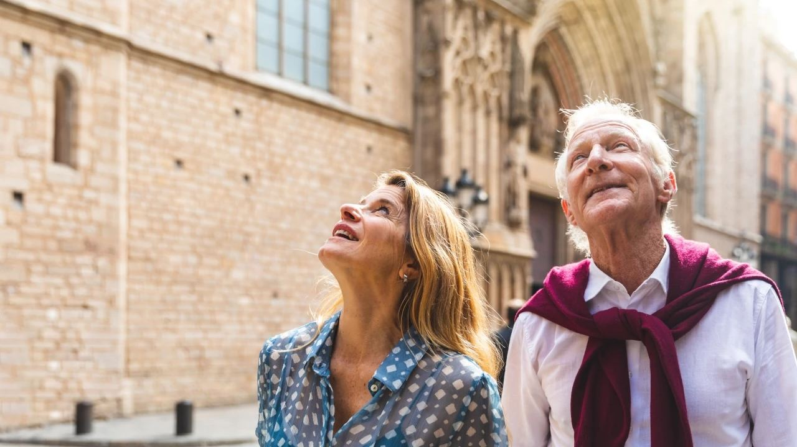

Vivir en España · Jubilación
Los mejores lugares para vivir en España para jubilados
 Por Anita Orłowska · · actualizado · 4 min de lectura
Por Anita Orłowska · · actualizado · 4 min de lectura

En resumen: Para jubilarse, los mejores lugares combinan un centro llano y cómodo a pie, un hospital a unos 20–30 minutos, un aeropuerto a una hora y una comunidad activa. En la Costa Blanca, Alicante, Torrevieja, Benidorm y Altea o, para una vida más verde y tranquila, Jávea y Dénia. En la Costa del Sol, Fuengirola, Benalmádena, Marbella y Estepona. Los Alcázares y San Pedro, en el Mar Menor, son los más asequibles.
El sol, un ritmo más tranquilo y la buena mesa hacen de España uno de los destinos favoritos para jubilarse en Europa, también para muchos españoles que vuelven a la costa. Pero el mejor sitio para un comprador de 40 años no siempre lo es a los 70. Las cuestas, la distancia al hospital y la vida en invierno pesan más con los años. Esta guía compara las zonas que mejor conocemos para que elija un lugar que le siga encajando dentro de veinte años.
¿Qué hace bueno un lugar para jubilarse?
- Llano y a pie: tiendas, farmacia, cafeterías y centro de salud cerca, sin cuestas fuertes.
- Sanidad cercana: un hospital público a 20–30 minutos y clínicas privadas cerca.
- Buenas conexiones: un aeropuerto a una hora para las visitas de la familia y autobús o tren por si deja de conducir.
- Vida todo el año: una localidad abierta y sociable en invierno, con asociaciones y gente de su edad.
- La vivienda adecuada: ascensor, pocos escalones, bajo o villa de una planta y una terraza soleada.
Localidades comparadas
| Zona | Por qué gusta a los jubilados | Hospitales cercanos |
|---|---|---|
| Alicante ciudad | Vida urbana, paseo marítimo llano, tranvía, aeropuerto a 20 min | Hospital General Dr. Balmis; varios hospitales privados |
| Torrevieja y Orihuela Costa | Precios más bajos, gran comunidad internacional, paseos llanos | Hospital Universitario de Torrevieja; Quirónsalud privado |
| Benidorm, Altea y l'Alfàs del Pi | Vida todo el año, muchas asociaciones y residentes escandinavos | Hospital Marina Baixa (Villajoyosa); privados en Benidorm |
| Jávea, Moraira y Dénia | Verde, más tranquilo, villas con vistas; más cuestas | Hospital de Dénia; clínicas privadas |
| Fuengirola y Benalmádena | Llano, compacto, tren a Málaga y al aeropuerto | Hospitales privados en Benalmádena y Fuengirola; hospitales de Málaga |
| Marbella y Estepona | Ambiente selecto, golf, cascos antiguos para pasear | Hospital Costa del Sol (público); privados en Marbella |
| Los Alcázares y San Pedro del Pinatar | Mar Menor tranquilo, muy llano, los precios más bajos | Hospital Universitario Los Arcos del Mar Menor (San Javier) |
Costa Blanca

La Costa Blanca ofrece más variedad y precios más bajos que la Costa del Sol, y el aeropuerto de Alicante sirve tanto al norte como al sur. Torrevieja y Orihuela Costa gustan por sus paseos llanos, sus muchos servicios y pisos por bastante menos de 200.000 €. Benidorm, Altea y l'Alfàs del Pi tienen una gran comunidad de jubilados del norte de Europa todo el año y mucha actividad social. Jávea, Moraira y Dénia, en el norte, son más verdes y tranquilas, con más villas, pero también más cuestas; conviene buscar una vivienda con acceso a nivel.
Costa del Sol
La Costa del Sol es más internacional y selecta, con el aeropuerto de Málaga cerca de todo. Fuengirola y Benalmádena son llanas y compactas, con tren a Málaga y al aeropuerto, una gran ventaja si ya no quiere conducir. Marbella y Estepona ofrecen golf, cascos antiguos preciosos y muy buena sanidad privada, a precios más altos. Más detalles en Costa Blanca o Costa del Sol.
Mar Menor (Murcia)
Localidades como Los Alcázares y San Pedro del Pinatar están junto a una laguna salada tranquila, de aguas poco profundas y cálidas, con largos paseos llanos. Las viviendas están entre las más baratas de la costa, la región tiene aeropuerto propio (Región de Murcia, en Corvera) y Alicante queda a una hora. En invierno es más tranquilo que las localidades grandes.
Sanidad para jubilados
La sanidad pública española es buena y la costa cuenta con hospitales modernos. Los pensionistas de otros países de la UE, del EEE, de Suiza o del Reino Unido que cobran una pensión pública suelen tener cobertura registrando el formulario S1 en la Seguridad Social; los jubilados españoles que se trasladan solo tienen que pedir la tarjeta sanitaria en su nueva comunidad. Quien no tenga derecho necesita un seguro privado, que a partir de cierta edad suele costar 100–300 € o más al mes, y algunas aseguradoras no admiten nuevos clientes mayores. Muchos jubilados combinan la pública con un seguro privado para ver antes al especialista.
Residencia y trámites

- Ciudadanos de la UE, del EEE y suizos: registro como residente (certificado de registro) con justificante de ingresos y de seguro, y alta en el padrón municipal.
- Ciudadanos de fuera de la UE: normalmente visado de residencia no lucrativa, con ingresos mínimos (unos 2.400 € al mes para una persona) y seguro médico privado.
- Impuestos: quien vive más de 183 días al año en España pasa a ser residente fiscal, y las pensiones extranjeras tributan según el convenio con su país. Lo explicamos en residente o no residente y en la vida en España durante la jubilación.
Preguntas frecuentes
¿Cuál es el mejor lugar para jubilarse en España?
Depende del presupuesto y del estilo de vida. Para localidades llanas, con vida y buenos hospitales: Alicante, Torrevieja, Benidorm, Fuengirola y Marbella. Para una vida más verde y tranquila, Jávea y Dénia. Para los precios más bajos, el Mar Menor.
¿Puede un jubilado extranjero usar la sanidad pública?
Sí, si cobra una pensión pública de un país de la UE, del EEE, de Suiza o del Reino Unido y registra su formulario S1. Si no, necesita un seguro privado.
¿Cuánto dinero hace falta para jubilarse en la costa?
Muchas parejas viven bien con 1.800–2.500 € al mes además de la vivienda. Para el visado no lucrativo se piden unos 2.400 € al mes para una persona.
¿Qué costa es más barata para jubilarse?
La Costa Blanca y el Mar Menor son claramente más baratos que la Costa del Sol, tanto para comprar como para el día a día.
Una casa para los próximos veinte años

La vivienda ideal para la jubilación es fácil de alcanzar, cómoda de vivir y cercana a lo que necesita. Venga en invierno y en verano, vaya a pie a la tienda y al centro de salud y piense en cómo le encajará la casa más adelante. Cuéntenos sus deseos y le enseñaremos viviendas en las localidades que mejor encajan.
Fuentes: Ministerio de Sanidad – health care for EU citizens in Spain · Ministerio de Inclusión – non-lucrative residence visa